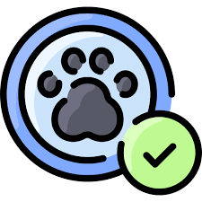

Sub-Gerencia de Sanidad y Salubridad Pública
Registrar Propietario o Veterinario
Registro de Mascotas
Registro/Creación de Campañas
Registro de Medicamentos
 Registrar Ficha
Cerrar Sesión

 Registrar Propietario o Veterinario
Registrar Propietario o Veterinario
.png) Registro de Mascotas
Registro de Mascotas
.png) Registro de Medicamentos
Registro de Medicamentos